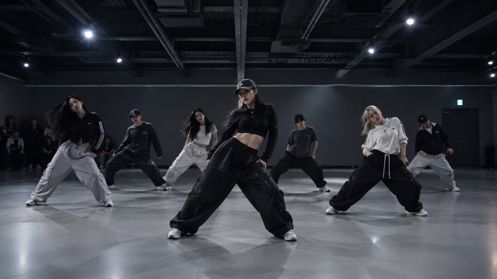

Pin notes to the moment, sketch the fix, get AI recaps and insights — built for dance teams.
dancerly.app

00:03.6@Maya arms are late on the 5-6. Hit the accent with the beat.
✦ Summary by AI
Nail the 5-6 arm hit and the opener is nearly there.